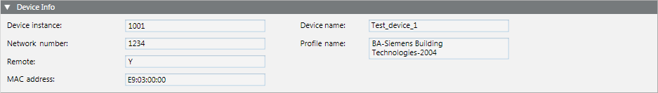
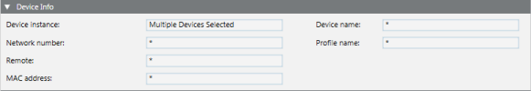

Device Info

The Device Info expander displays the BACnet device data extracted from the configuration file when it is imported.
Network Setting | |
Item | Description |
Device instance | Indicates the device instance number. |
Device name | Indicates the name of the device. |
Network number | 16-bit number that identifies the devices that reside on particular network segment. For example, a BACnet network is spread over two IP network segments, and devices on one segment belong to BACnet network 1, while devices on the other segment belong to BACnet network 2. This number is useful for routing BACnet messages and can also be used as a filter for Discovery. |
Profile name | Optional property of a BACnet device. It provides information about the device or the application it is running. |
Remote | Indicates whether this device is on the same BACnet network number relevant to the system client. |
MAC address | Indicates the hardware address of a device connected to a network. |
Configuring Multiple Devices Simultaneously
When you select multiple BACnet devices in System Browser, you can configure them at the same time if you want the same settings (including passwords) throughout the devices.
Affected expanders in the BACnet tab include the following:
- COV and Polling Info
- Timing and Status Info
- Backup/Restore Information
- Other Settings
The Device Info expander is the exception since some of the information in it is unique to each device. However, when you select multiple devices, the information in the Device Info expander changes.

Note that the Device instance field changes to read Multiple Devices Selected. This means that two or more devices are selected for editing. The remaining fields contain asterisks.
An asterisk indicates that the values in a field differ among the selected devices. Fields with asterisks will be either gray or white. Gray shading indicates that the fields are unavailable for editing. White shading indicates that the fields are available for editing. If you edit a field that is white and contains an asterisk, the change will affect all selected devices.
Example
One device has a Polling rate of 30, and another device has a Polling rate of 60. If you change the rate to 90, then both devices will be changed to 90. If you later change your mind about the rates, you can select each device independently and then enter unique rates.